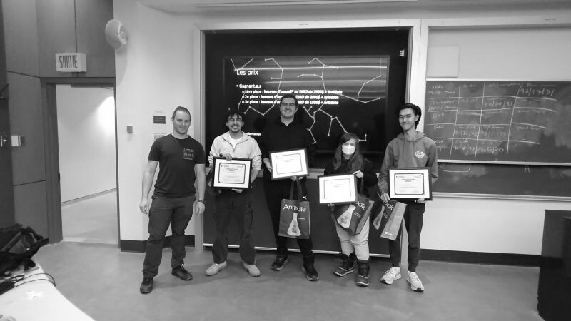
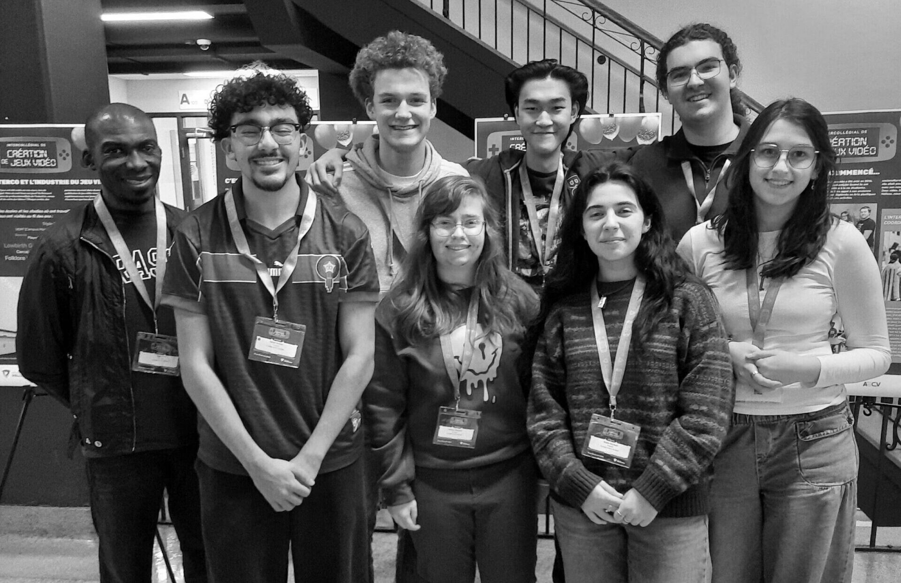
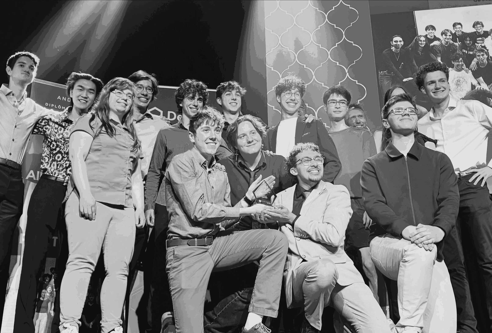
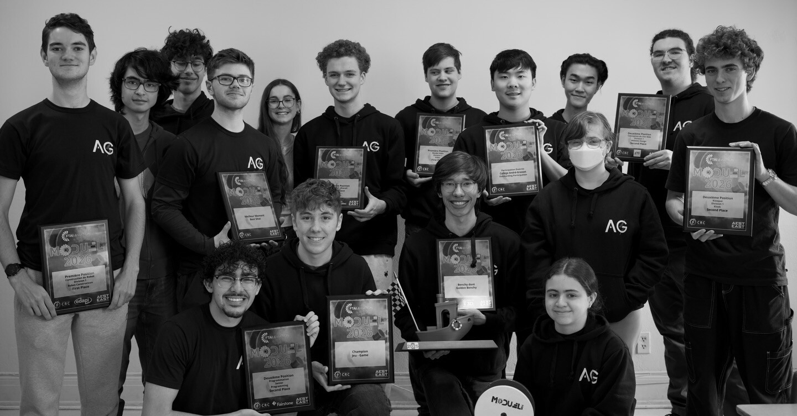
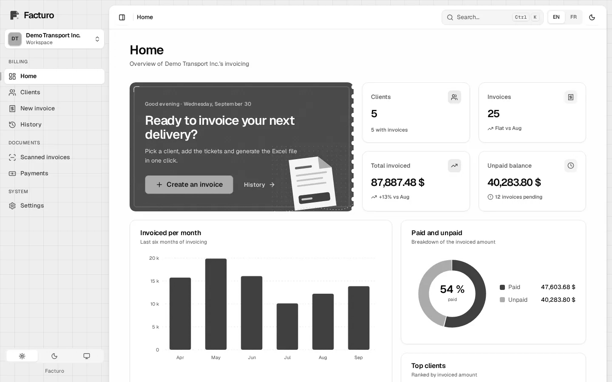
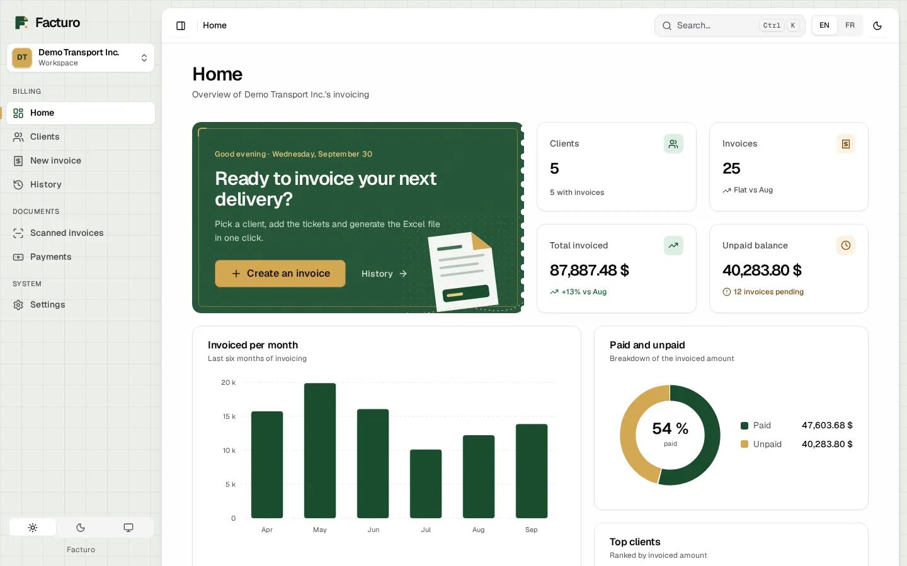
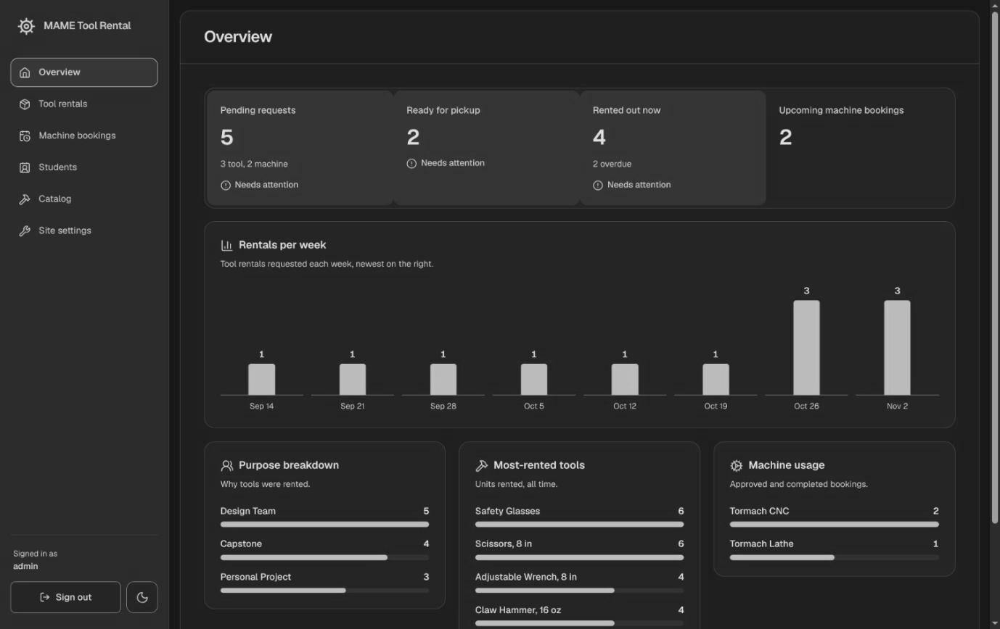

Software Engineering at McGill
Y01 Achievements A02 Projects H03 Experience Y04 About A05 Say hi
Achievements
- 75/75Canadian Computing Competition, perfect score2026
- 1stDIRO Hackathon, Université de Montréal1st of 18 teams from 9 CEGEPs, $2,500 team scholarship, 2026

The winners with their certificates
Article, diro.umontreal.ca - 1stIntercollegiate Video Game Creation CompetitionWith Atlantis, a 2D game in Godot 4, 2026

The Atlantis team at Cégep de Valleyfield
Article, neomedia.com - 1stCanadian Robotics Competition, robot competitionMatches against the other teams' robots, 2026

Our school's Club of the Year
Post, instagram.com - 1st, 2ndCanadian Robotics Competition, programming1st in Programming in 2025, 2nd in Senior Programming in 2026

The team with its 2026 trophies
Post, instagram.com


Facturo
Paper tickets from a Quebec trucking company, turned into tax-correct invoices.
Local-first app with more than 700 tests and verified in-app updates. Public demo with fictional data.
Read the deep dive-
Tool and machine rental with an admin dashboard
FastAPI and Next.js, deployed only after every test passes
Built for MAME, in use at MAME

Admin overview, demo data
McGill Association of Mechanical Engineers -
A 2D game in Godot 4, built with a team
Architected 6 gameplay systems
1st place, Intercollegiate Video Game Creation Competition 2026
- 02.4
CRC problems
12 algorithmic problems for CRC 2027
Author, volunteer since February 2026
Reference solutions and 20+ edge-case tests each, in C++ and Python
-
Firmware for the CRC 2026 robot
Embedded state machine in C/C++, PID tuning
1st place, robot competition, 2026
- 02.6
Showdown AI
A competitive battle agent
Planned
In progress, nothing built yet
Work
Since Sep 2026
Coding agent evaluator
Mercor, contractor
Jun 2026 to Oct 2026
Developer
Facturo, for a Quebec trucking company
Since Feb 2026
Problem author
CRC 2027, volunteer
Since 2025
Freelance developer
12 projects for 9 clients
Involvement
Software
McGill Robotics
Full-stack
Google Developer Group at McGill, subteam project
Competitor
McGill Compete, ICPC NENA
Two habits
I decide fast under pressure, and I build things that run themselves.
The first came from competitive Pokemon, which is like chess with more variables: bluffing, and working out damage fast on a clock. The second came from Minecraft automation packs like SkyFactory and StoneBlock, where the goal is a machine that keeps working without you.